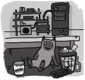

Q: Ну навошта, а?
A: Ну так атрымалася. Ідэя не мая, падгледзеў у сябра. Разумныя людзі кажуць, што калі пішаш, то гэта зноў вымушае вярнуцца да матэрыялу і пераасэнсаваць яго. Ну у каго не было “геніальных ідэй”, якія не даюць спакойна спаць, але па-раніцы ператвараюцца ў поўнае глупства ды й неяк сорамна ўвогуле пра іх рассказваць? А так пішаш і адразу разумееш што штосьці тут не так.
Q: Калі вы ўжо награецеся ў гэтага сталкера?
A: Здаецца, ніколі. Ды я й не гуляю, шчыра кажучы. Калісці думаў што стану занадта дужым праграмістам калі перакладу яго на вулкан – хлопцы на раёне даўно ўжо квэйкі ці думы перапісалі. Гэта ж толькі потым уцяміў, што без татальнай перапрацоўкі ніякага прафіту не будзе. Так і закінуў. Можа зараз атрымаецца што?
Q: Што за ICO такі? Зноў гэтае ваша анімэ?
A: Зусім не. Першая відэа-гульня ад Фуміта Уэды (таго самага, што потым пра Shadow of the Colossus і Last Guardian). Выйшла ў далёкім 2001 годзе (я тады крапіву палкай біў ды й у суседа на дэндзі граў калі чарга падыходзіла). Спрэчная ў выкананні, але, як кажуць, “ад душы”. Адна з нешматлікіх у гісторыі PS2, якая трапіла на дыскі з дэбажнай інфармацыяй.
Q: pc3CO? Як ты гэта вымаўляеш увогуле?
A: PC Tri-ICO. Трэцяя гульня Уеды пра вялікую птушка-котку і хлопца якім немагчыма кіраваць. Раблю эмулятар каб запусьціць гэты цуд на ПК.
Q: Калі чакаць новай пісаніны?
A: Ай, стаміўся. Кіну ўжо заўтра.
